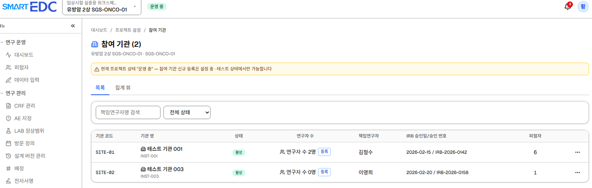
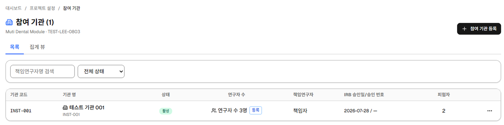
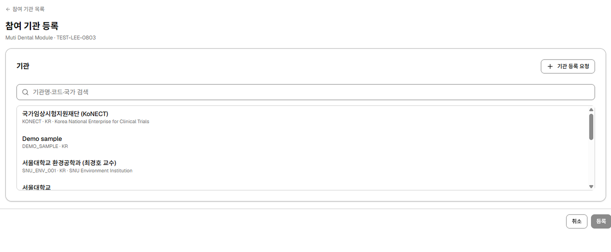
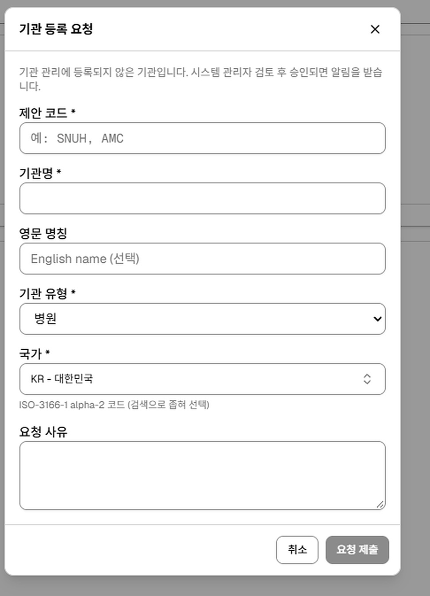
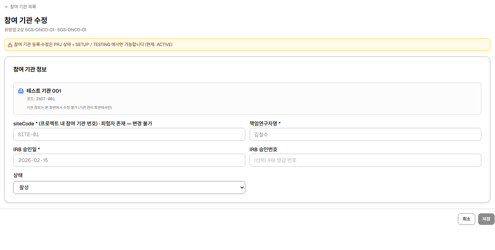
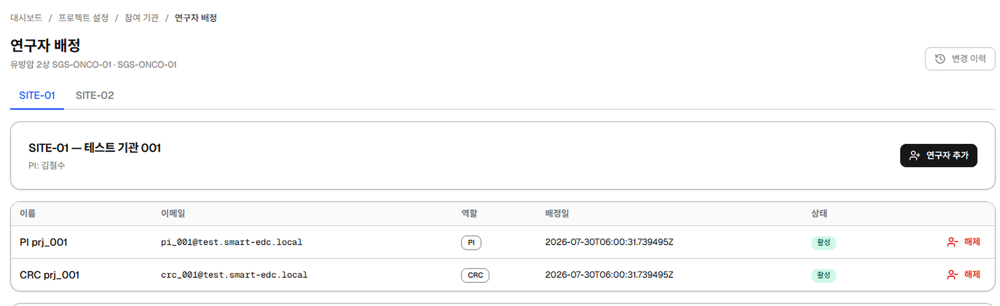
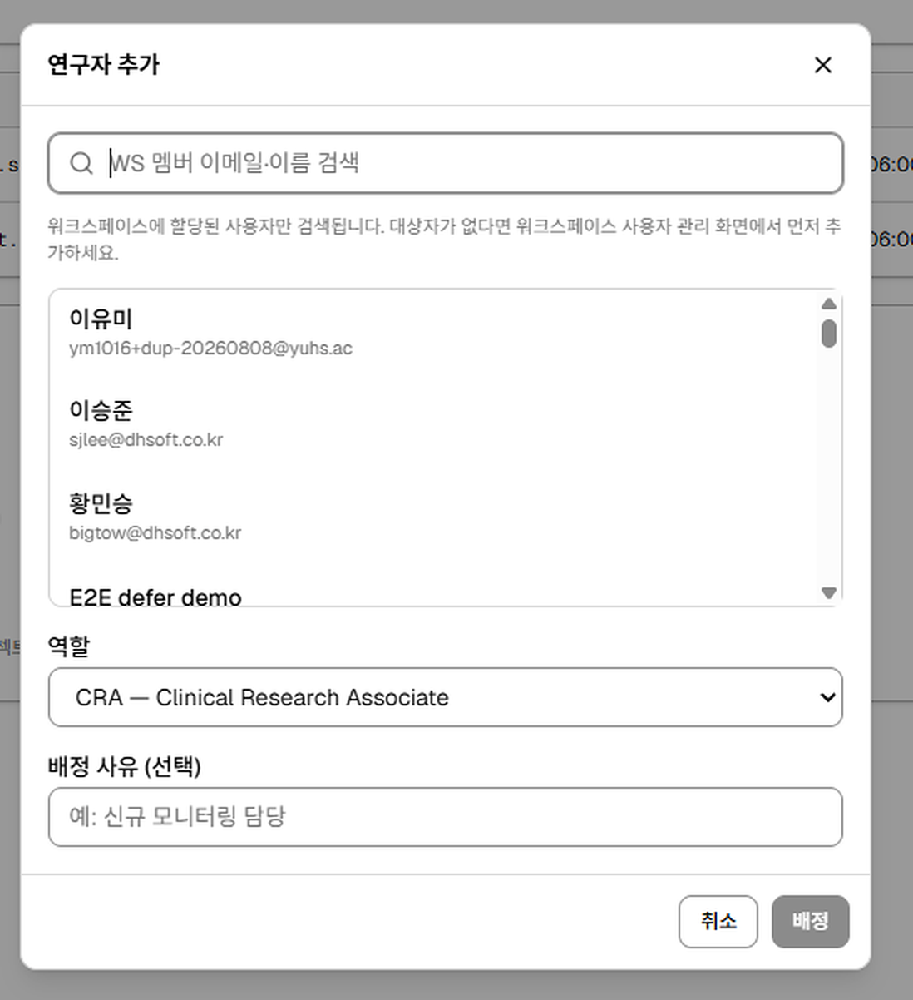

참여 기관
SCR-PRJ-005·006·007 · 목록 · 등록 · 수정 · 기관 등록 요청 · 연구자 배정
참여 기관 목록
- 1.1화면 구성
- 1.2등록이 열리는 조건
1.1화면 구성
개요
이 프로젝트에서 피험자를 모집하는 기관(Site)을 관리하는 화면입니다. 기관마다 책임연구자와 IRB 승인 정보를 두고, 그 기관에서 일할 연구자를 배정합니다. 참여 기관이 있어야 피험자를 등록할 수 있으므로 피험자 등록보다 먼저 끝내야 하는 구축 작업입니다.
화면 설명

검색 — 책임연구자명으로 행을 좁힙니다.
상태 필터 — 활성·종료로 좁힙니다.
등록 — 그 기관의 연구자 배정 화면으로 이동합니다 3.1. 왼쪽 숫자가 현재 배정된 연구자 수입니다.
행 액션 — 수정 2.3과 연구자 배정 3.1 두 가지입니다. 기관 종료는 여기에 없습니다 — 프로젝트를 종료하면 하위 참여 기관이 모두 자동으로 종료되기 때문입니다.
피험자 수 — 선택하면 그 기관의 피험자 목록으로 이동합니다.
이동 경로는 대시보드 / 프로젝트 설정 / 참여 기관 입니다.
제목 옆 괄호 안이 등록된 참여 기관 수입니다.
노란 배너 — “현재 프로젝트 상태 "운영 중" — 참여 기관 신규 등록은 설정 중 · 테스트 상태에서만 가능합니다”. 이 배너가 보이면 등록 버튼이 표시되지 않습니다 1.2.
목록 · 집계 뷰 탭 — 집계 뷰는 기관별 등록 현황을 카드로 보여줍니다. 감사자는 집계 뷰를 볼 수 없습니다.
기관 코드 · 기관 명 — 기관 코드는 기관 자체의 코드가 아니라 이 프로젝트 안에서 부여한 번호(siteCode) 입니다 1.2. 기관명 아래 작은 글자가 기관 마스터의 코드입니다.
상태 — 활성 또는 종료 입니다.
책임연구자 — 등록·수정 화면에서 입력한 이름이 그대로 표시됩니다.
IRB 승인일 / 승인 번호 — 승인 번호는 선택 입력이라 비어 있으면 — 로 표시됩니다.
접근 경로
- • 왼쪽 메뉴 설정 > 참여 기관
- • 프로젝트 설정 화면의 참여 기관 바로가기
- • 프로젝트 설정 화면의 연구자 배정 바로가기 (연구자 수 열이 강조된 상태로 열림)
- • 프로젝트 대시보드 참여 기관 위젯의 행 또는 전체 보기
유의사항
오해하기 쉬운 동작
- • 연구책임자(PI)는 자기 기관 행만 수정·배정할 수 있습니다. 다른 기관 행에는 액션 메뉴가 표시되지 않습니다. 연구간호사·모니터요원· 감사자는 목록을 읽을 수만 있습니다.
1.2등록이 열리는 조건
개요
앞 쪽과 같은 화면을 다른 프로젝트에서 연 것입니다. 이 프로젝트는 아직 설정 중이라 노란 배너가 없고 오른쪽 위에 참여 기관 등록 버튼이 나타납니다. 참여 기관은 설정 중 · 테스트 단계에서만 새로 넣거나 고칠 수 있으므로, 운영을 시작하기 전에 기관 구성을 확정해야 합니다.
화면 설명

+ 참여 기관 등록 — 새 참여 기관을 추가합니다 2.1. 프로젝트가 설정 중 또는 테스트 일 때만, 그리고 권한이 있는 사람에게만 표시됩니다.
등록 — 연구자 배정 화면으로 이동합니다 3.1.
제목 아래에 프로젝트명과 프로토콜 번호가 표시됩니다. 앞 쪽과 다른 프로젝트인지 여기에서 확인합니다.
목록 · 집계 뷰 탭 구성은 프로젝트 상태와 무관하게 같습니다.
기관 코드 가 기관 마스터 코드와 같은 값입니다. 등록할 때 참여 기관 번호를 비워 두면 기관 코드가 그대로 들어가기 때문이며, 앞쪽처럼 SITE-01 형식으로 직접 정할 수도 있습니다.
책임연구자 는 자유 입력 항목이라 실명이 아닌 값도 그대로 표시됩니다.
IRB 승인번호 미입력 — 선택 항목이라 — 로 표시됩니다. IRB 승인일은 필수입니다.
피험자 수 — 설정 중 단계에서 등록한 피험자는 시험 데이터이며 운영 시작 시 전건 삭제됩니다.
프로젝트 상태별 가능 범위
| 프로젝트 상태 | 참여 기관 등록·수정 | 연구자 배정·해제 |
|---|---|---|
| 설정 중 · 테스트 | 가능 | 가능 |
| 운영 중 | 불가 — 배너 표시 · 입력란 비활성 | 가능 |
| 종료 · 보관 | 불가 | 불가 — 읽기 전용 |
유의사항
필수 확인 데이터 손상 · 폼 완료 불가
- • 운영을 시작하면 참여 기관을 더 넣을 수 없습니다. 반대로 연구자 배정은 운영 중에도 계속 가능합니다 — 인력 교체는 정상 업무이기 때문입니다. 두 가지를 같은 제약으로 기억하지 마십시오. 운영 전환 전에 참여할 기관이 모두 들어갔는지 확인하십시오.
참여 기관 등록 · 수정
- 2.1기관 선택
- 2.2기관 등록 요청
- 2.3수정 화면
2.1기관 선택
개요
참여 기관을 추가하는 첫 단계입니다. 기관은 새로 입력하는 것이 아니라 이미 등록된 기관 목록에서 선택합니다. 기관을 고르면 그 아래에 참여 기관 번호 · 책임연구자명 · IRB 승인 정보를 입력하는 칸이 이어집니다 (항목 구성은 2.3 참조).
화면 설명

기관 검색 — 기관명·코드·국가로 목록을 좁힙니다.
기관 선택 — 목록에서 기관을 선택합니다. 선택해야 아래 입력 항목과 등록 이 열립니다.
+ 기관 등록 요청 — 목록에 찾는 기관이 없을 때 사용합니다 2.2.
등록 — 입력을 저장하고 목록으로 돌아갑니다. 기관 · 참여 기관 번호 · 책임연구자명 · IRB 승인일 을 모두 채우기 전에는 흐리게 표시되어 선택할 수 없습니다.
← 참여 기관 목록 — 저장하지 않고 목록으로 돌아갑니다.
어느 프로젝트에 추가하는지 프로젝트명과 프로토콜 번호로 확인합니다.
기관 카드 — 기관을 고르는 영역입니다. 기관 자체의 정보(명칭·주소·유형)는 여기에서 수정할 수 없습니다.
각 항목의 작은 글자는 기관 코드 · 국가 · 영문 명칭 입니다. 이름이 비슷한 기관이 있을 때 이 값으로 구별하십시오.
목록은 스크롤됩니다 — 보이는 네 건이 전부가 아니므로 검색으로 좁혀 확인하십시오.
취소 — 입력을 버리고 목록으로 돌아갑니다.
유의사항
필수 확인 데이터 손상 · 폼 완료 불가
- • 기관을 잘못 고르면 등록 후에는 바꿀 수 없습니다. 수정 화면에서는 기관 선택 영역 자체가 표시되지 않습니다 2.3. 기관을 바꾸려면 참여 기관을 다시 등록해야 하므로, 코드와 국가까지 확인한 뒤 선택하십시오.
2.2기관 등록 요청
개요
참여시키려는 기관이 기관 목록에 없을 때 사용하는 창입니다. 여기에서 바로 기관이 만들어지지는 않습니다 — 시스템 관리자가 검토해 승인해야 목록에 나타나며, 승인되면 알림을 받습니다. 따라서 참여 기관 등록은 승인된 뒤에 이어서 진행합니다.
화면 설명

제안 코드 — 필수입니다. 기관을 식별할 짧은 코드를 제안합니다 (예: “SNUH” · “AMC”). 최종 코드는 관리자가 정합니다.
기관명 — 필수입니다. 공식 명칭을 입력합니다.
영문 명칭 — 선택입니다. 다국가 연구에서 구별이 필요할 때 입력합니다.
기관 유형 — 필수입니다. 병원 등 유형을 선택합니다.
국가 — 필수입니다. 기본값은 대한민국이며 검색으로 좁혀 선택합니다.
요청 사유 — 선택입니다. 관리자가 판단할 근거를 적으면 검토가 빨라집니다.
요청 제출 — 요청을 보냅니다. 제출하면 창이 바로 닫히지 않고 완료 안내로 바뀌므로, 내용을 확인한 뒤 닫으십시오.
안내문 — “기관 관리에 등록되지 않은 기관입니다. 시스템 관리자 검토 후 승인되면 알림을 받습니다.”
닫기 — 요청하지 않고 창을 닫습니다.
국가 입력 안내 — “ISO-3166-1 alpha-2 코드 (검색으로 좁혀 선택)”. 두 글자 국가 코드 기준이며, 목록에 없는 값은 입력할 수 없습니다.
취소 — 입력을 버리고 창을 닫습니다.
유의사항
오해하기 쉬운 동작
- • 같은 코드로 이미 대기 중인 요청이 있으면 거절됩니다. 이때는 다시 요청하지 말고 관리자의 검토가 끝날 때까지 기다리십시오 — 다른 사람이 같은 기관을 이미 요청했을 수 있습니다. 승인 전까지는 그 기관을 참여 기관으로 추가할 수 없습니다.
2.3수정 화면
개요
등록한 참여 기관의 값을 고치는 화면입니다. 등록 화면과 입력 항목이 같지만 기관 자체는 바꿀 수 없습니다. 캡처는 운영 중 프로젝트라 전 항목이 비활성 상태이며, 설정 중 · 테스트 단계에서는 같은 자리에서 값을 고치고 저장할 수 있습니다.
화면 설명

참여 기관 번호(siteCode) — 프로젝트 안에서 이 기관을 가리키는 번호입니다. 피험자가 한 명이라도 등록되면 변경할 수 없습니다.
책임연구자명 — 필수입니다. 목록의 책임연구자 열에 그대로 표시됩니다.
IRB 승인일 — 필수입니다.
IRB 승인번호 — 선택입니다. 비워 두면 목록에 — 로 표시됩니다.
상태 — 활성 · 종료 를 고릅니다. 연구책임자는 이 항목을 바꿀 수 없습니다.
저장 — 변경을 적용하고 목록으로 돌아갑니다.
노란 배너 — “참여 기관 등록·수정은 PRJ 상태 = SETUP / TESTING 에서만 가능합니다”. 괄호 안이 현재 상태입니다. 이 배너가 보이면 저장할 수 없습니다.
기관 정보는 본 화면에서 수정 불가 — 기관의 명칭·유형·국가는 기관 관리 화면에서만 고칩니다. 여기에서 고치는 것은 이 프로젝트에서의 참여 조건뿐입니다.
선택된 기관명과 기관 코드 — 수정 화면에서는 다른 기관으로 바꿀 수 없습니다.
라벨이 잠금 사유를 함께 알려 줍니다 — “피험자 존재 — 변경 불가”. 연구책임자가 수정할 때도 이 항목은 잠깁니다.
취소 — 변경을 버리고 목록으로 돌아갑니다.
← 참여 기관 목록 — 같은 동작입니다.
유의사항
필수 확인 데이터 손상 · 폼 완료 불가
- • 참여 기관 번호는 피험자가 생기는 순간 끝까지 고정됩니다. 이미 발급된 피험자 식별 번호가 이 번호를 포함하기 때문입니다. 번호 체계를 바꾸려면 피험자를 등록하기 전에 끝내십시오.
연구자 배정
- 3.1배정 현황
- 3.2연구자 추가
- 3.3배정 규칙
3.1배정 현황
개요
기관에서 일할 사람을 정하는 화면입니다. 참여 기관마다 탭이 있고, 탭 안에 그 기관에 배정된 연구자가 나열됩니다. 배정은 운영 중에도 계속 할 수 있습니다 — 인력 교체는 연구를 진행하면서 일어나는 정상 업무이기 때문입니다.
화면 설명

연구자 추가 — 이 기관에 사람을 배정합니다 3.2.
기관 탭 — 참여 기관이 여럿이면 탭으로 나뉩니다. 연구책임자에게는 자기 기관 탭만 표시됩니다.
해제 — 배정을 거둡니다. 사유를 5자 이상 입력해야 실행할 수 있으며, 확인 창에서 영향 범위를 안내합니다 3.3.
이동 경로는 대시보드 / 프로젝트 설정 / 참여 기관 / 연구자 배정 입니다.
변경 이력 — 현재 선택할 수 없습니다. 배정·해제 기록은 시스템에 남고 있으며 화면 제공은 준비 중입니다.
선택한 기관의 참여 기관 번호 · 기관명 · 책임연구자 입니다. 작업 전에 어느 기관을 보고 있는지 여기에서 확인하십시오.
역할 — 그 사람이 이 기관에서 맡은 역할입니다 3.3.
배정일 — 배정된 시각입니다.
상태 — 활성 또는 해제됨 입니다. 해제한 사람도 목록에서 사라지지 않고 해제됨으로 남습니다.
이메일 — 같은 이름이 여럿일 때 이 값으로 구별합니다.
유의사항
오해하기 쉬운 동작
- • 해제해도 기록은 지워지지 않습니다. 물리적으로 삭제하는 것이 아니라 비활성 처리이며, 그 사람이 그때까지 입력한 자료와 서명은 그대로 남습니다. 임상시험 자료는 누가 언제 무엇을 했는지 끝까지 추적할 수 있어야 하기 때문입니다.
3.2연구자 추가
개요
선택한 기관에 사람을 배정하는 창입니다. 아무나 고를 수 있는 것이 아니라 이미 워크스페이스에 소속된 사용자 중에서만 고릅니다. 사람과 역할을 정하고 배정을 선택하면 즉시 적용됩니다.
화면 설명

검색 — 이메일 또는 이름으로 목록을 좁힙니다.
사용자 선택 — 목록에서 한 명을 선택합니다. 이 기관에 이미 배정된 사람은 이미 배정됨 으로 표시되어 선택할 수 없습니다.
역할 — 이 기관에서 맡을 역할을 고릅니다. 고를 수 있는 역할은 기관 단위로 일하는 역할 3종뿐입니다 3.3.
배정 사유 — 선택 입력입니다. 교체·증원처럼 배경이 있는 배정은 적어 두면 나중에 확인하기 쉽습니다.
배정 — 배정을 적용합니다. 사람과 역할을 모두 고르기 전에는 흐리게 표시되어 선택할 수 없습니다.
닫기 — 배정하지 않고 창을 닫습니다.
안내문 — “워크스페이스에 할당된 사용자만 검색됩니다. 대상자가 없다면 워크스페이스 사용자 관리 화면에서 먼저 추가하세요.”
각 항목의 작은 글자가 이메일 입니다. 같은 이름이 여럿일 때 이 값으로 구별하십시오.
목록은 스크롤됩니다 — 보이는 몇 건이 전부가 아니므로 검색으로 좁혀 확인하십시오.
취소 — 창을 닫습니다.
유의사항
오해하기 쉬운 동작
- • 찾는 사람이 목록에 없다면 아직 워크스페이스 멤버가 아닙니다. 이 창에서는 계정을 만들 수 없으므로 워크스페이스 사용자 관리 화면에서 먼저 추가한 뒤 돌아오십시오. 이름을 다르게 검색해도 나타나지 않습니다.
3.3배정 규칙
개요
배정 화면 아래에는 어떤 역할을 배정할 수 있는지를 알려 주는 카드가 있습니다. 규칙은 두 가지입니다 — 기관 단위로 일하는 역할만 배정할 수 있고, 한 사람은 한 프로젝트에서 하나의 기관에만 배정됩니다. 이 두 규칙은 시스템이 강제하므로, 어기는 배정은 저장되지 않습니다.
화면 설명

역할 권한 요약 — 이 프로젝트에 정의된 역할이 모두 나열됩니다. 배정 가능 여부는 아래 Site 제한 표시로 갈립니다.
Site 제한 표시가 없는 역할(감사자 · 데이터 관리자)은 전체 기관을 함께 보는 역할이라 특정 기관에 배정하지 않습니다. 이 역할은 권한 관리 화면에서 프로젝트 단위로 부여합니다.
Site 제한 — 자기 기관만 다루는 역할이라는 표시입니다. 연구자 추가 창의 역할 목록에는 이 표시가 붙은 역할만 나타납니다.
화면 안내문이 두 규칙을 그대로 적고 있습니다 — “Site 제한 역할만 배정할 수 있습니다. 1명의 연구자는 프로젝트 내 하나의 Site에만 배정할 수 있습니다 (UNIQUE 제약).”
역할 5종과 배정 가능 여부
| 역할 | 하는 일 | 기관 배정 |
|---|---|---|
| PI 연구책임자 | 자기 기관의 피험자와 자료를 책임집니다 | 가능 |
| CRC 연구간호사 | 자기 기관의 피험자 자료를 입력합니다 | 가능 |
| CRA 임상연구모니터요원 | 자기 기관의 자료를 원자료와 대조합니다 | 가능 |
| DM 데이터 관리자 | 전체 기관의 자료를 통합해 관리합니다 | 불가 |
| AUDITOR 감사자 | 전체 기관을 읽기 전용으로 확인합니다 | 불가 |
유의사항
필수 확인 데이터 손상 · 폼 완료 불가
- • 배정을 해제하면 그 프로젝트의 역할도 함께 끊깁니다. 기관 배정과 역할 배정은 짝으로 움직이므로, 사람을 다른 기관으로 옮기려면 먼저 해제한 뒤 새 기관에서 다시 배정해야 합니다. 두 기관에 동시에 배정할 수는 없습니다.